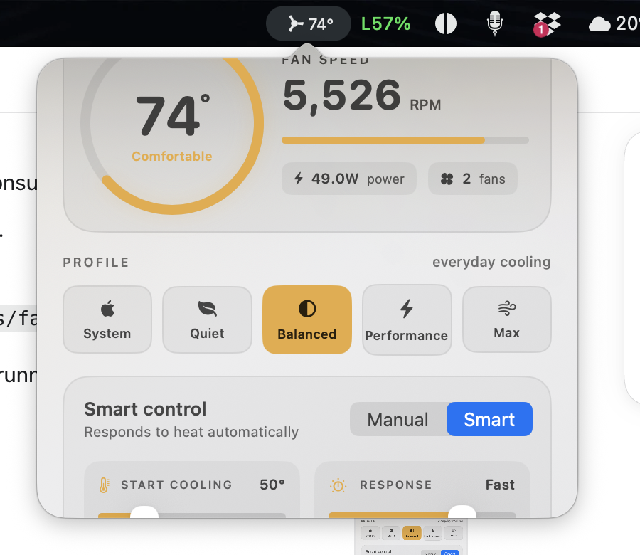

Hand control back to the operating system immediately.
fan 1.0 for macOS
Cool under
pressure.
Live thermals, sensible cooling profiles, and precise fan control from one native menu bar utility.
macOS 26.1+ Apple Silicon MIT licensed
Native SwiftUIFast, compact, and built for macOS.
Local onlyNo account, analytics, or telemetry upload.
Reversible controlReturn cooling decisions to macOS at any time.
Cooling profiles
Pick the intent, not a spreadsheet of fan curves.
Move from macOS defaults to quieter, balanced, performance, or maximum cooling with one clear choice.
Delay stronger cooling until the Mac genuinely needs it.
A measured thermal response for normal creative and technical work.
Bring the fans in sooner for sustained workloads.
Apply the available hardware maximum to every detected fan.

Thermal context without opening another dashboard.
Keep temperature, fan percentage, or power draw in the menu bar. Open fan when you need the full picture.
- Temperature
- Live CPU and available GPU sensors
- Cooling
- Current RPM, target behaviour, and fan count
- Power
- Battery power draw when macOS exposes it
Automatic when you want it. Exact when you need it.
Smart controlTemperature aware
Choose when extra cooling begins and how quickly fan speed responds as heat rises.
Manual controlFixed RPM
Set a precise target for long renders, exports, development builds, or a quiet workspace.
3,800RPM
10 minute boostShort, decisive cooling
Run maximum cooling for a timed burst, then return to the previous profile automatically.
Designed to give control back
A fan utility should fail safely.
The privilege boundary is narrow, values are clamped, and macOS automatic control remains one click away.
Validated commands
The helper accepts only the small set of operations needed for fan control.
Emergency cooling
A configurable high-temperature guard can force every fan to its hardware maximum.
Watchdog restoration
If fan stops unexpectedly, the watchdog returns the fans to macOS automatic mode.
No cloud dependency
Readings, preferences, and diagnostics remain on the Mac unless the user exports them.
One menu bar icon. One helper approval. Done.
- DownloadGet the fan 1.0 DMG from GitHub Releases.
- MoveDrag fan.app into the Applications folder.
- ApproveInstall the narrowly scoped helper once.
Terminal installation
curl -fsSL https://raw.githubusercontent.com/lordydord/fan/main/scripts/install.sh | bash
Straight answers.
Why does fan need an administrator password?
macOS restricts writes to the System Management Controller. The password installs a narrow helper; the main app stays unprivileged.
Does fan collect data?
No. There is no account, advertising, analytics SDK, or telemetry upload. Diagnostics export only when you ask.
Can I return to normal macOS cooling?
Yes. Choose System, use Give back to macOS, or quit fan. The watchdog also restores control after an abnormal exit.
Will every Mac expose the same sensors?
No. SMC keys vary by model. fan shows supported readings and does not fabricate missing values.